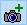

Раздел 7 Обработка данных аэрофотосъёмки в ЦФС PHOTOMOD
7.1 Программное обеспечение
Для практической работы вам понадобится цифровая фотограмметрическая система PHOTOMOD. Информацию о ней можно найти на домашнем сайте (https://racurs.ru/), там же можно скачать себе дистрибутив бесплатной версии программы, предварительно зарегистрировавшись.
7.2 Исходные данные
В качестве исходных данных мы будем использовать серию аналоговых аэрофотоснимков на территорию WaldKirch (Германия).
7.3 Создание проекта
Запустите программу PHOTOMOD 7 X64. Если вы используете Lite версию, то откроется окно с информацией об усеченном функционале. Интерфейс программы представляет собой набор окон, например, окно главного меню, окно схемы блока, а также различные панели работы с данными. При запуске программы открывается окно управления проектами. Для создания проекта нажмите на соответствующую кнопку справа.
Окно менеджера проекта
Справа выберите путь для создания проекта. Обратите внимание, что по умолчанию предлагаются системные пути на диске C. вы можете создать новый путь, нажав на кнопку Open Explorer , а затем на кнопку подключения .
Обратите внимание, что у программы есть свои особенности, связанные с сетевой структурой хранения данных, что может не позволить вам создать проект с произвольным путём не на диске C.
Заполните Имя проекта, Описание. Если вы работаете с фотографическими снимками, выберите в Тип Центральная проекция. Укажите правую декартовую систему координат – для этого нажмите на Выбрать – Из БД – Международная, в открывшемся окне найдите Cartesian Right (№142). Задайте амплитуду высот местности от 400 до 900 м. нажмите ОК для создания проекта.
7.4 Внутреннее ориентирование
Перед вами откроется окно создания нового маршрута – можно согласиться с именем по умолчанию. Маршрут – это совокупность снимков, полученных с одного галса залёта. Затем вы перейдёте к окну редактора блока снимков. Блок снимков – это совокупность всех снимков, сделанных на изучамую территорию в течение залёта.
Окно менеджера проекта
Кнопки и предназначены для добавления снимков. Первая позволяет добавить файлы из любого места, а вторая – из подключенных папок, включая папку проекта. Проще использовать вторую кнопку – для этого необходимо переместить данные в папку Images проекта (C:/PHOTOMOD6.VAR/Profiles/%Имя профиля%/%Имя проекта%/Images).
По умолчанию программа формирует накидной монтаж из снимков, состоящий из одного маршрута (в одну линию).
Накидной монтаж – схематическое наложение снимков блока, исходя из их принадлежности к маршрутам, порядка съёмки, значений продольного и поперечного перекрытия.
Используемые снимки в именах файлов содержат информацию о принадлежности к маршрутам (число до символа ‘_’) и порядковом номере снимка (число после символа ‘_’). Можно заметить, что используемые снимки относятся к маршрутам 2 и 3. В основном окне программы найдите меню Блок – Разбить на маршруты – По именам снимков.
Разбивка по маршрутам
Поскольку маршрут 2 представляет собой галс обратного направления съёмки, необходимо его выделить в редакторе блока и нажать на кнопку изменения порядка изображений в маршруте .

Правильный порядок кадров в маршрутах блока
Откройте окно накидного монтажа в главном меню Окна – Накидной монтаж или нажав на кнопку в окне редактора блока. Задайте продольное и поперечное перекрытие в 65 и 43%, для предварительного внешнего ориентирования снимков выберите Центры проекции и углы. Нажмите на кнопку Применить и закройте окно, после чего накидной монтаж перестроится.
Настройки накидного монтажа
Далее необходимо задать параметры камеры, с помощью которой были сделаны кадры. Для этого в главном меню программы выберите пункт Ориентирование – Управление камерами. В открывшемся окне необходимо создать камеру, нажав на кнопку . Параметры камеры можно заполнить самостоятельно, а можно импортировать из файла, предоставленного в исходных данных.
Камера: RC_30
Тип камеры: аналоговая
Единицы измерения: мм
Фокусное расстояние: 153.5030
Координаты главной точки: X: 0.0020, Y: 0.0110
Дисторсия: Формула (физ.)
Информация о метках: Координаты меток
Настройки накидного монтажа
После этого необходимо выделить все снимки в окне управления камерами проекта и убедиться в том, что стоит галка напротив опции Присвоить выбранную камеру выбранным изображениям. Нажмите на кнопку Выполнить. После закрытия окна камера присвоится ко всем снимкам.
В окне редактора блока выделите снимок 2_0710, после чего в главном меню программы выберите Ориентирование – Внутреннее ориентирование – Внутреннее ориентирование снимка. Откроется окно для задания координатных меток снимков. Для ориентирования необходимо выбрать каждую строку координат из таблицы внизу и указать их положение на соответственных координатных метках. После установки маркера необходимо нажать на кнопку Измерить метку.
Окно внутреннего ориентирования снимка
Для того чтобы перемещать снимок, используйте зажатую клавишу ALT. Изменение масштаба осуществляется с помощью соответствующих кнопок над изображением.
После расстановки координатных меток снимка нажмите кнопку Применить и OK. Координатные метки на всех остальных снимках можно расставить автоматически. Выберите в главном меню Ориентирование – Внутреннее ориентирование – Полуавтоматическое внутреннее ориентирование. Выберите все изображения в окне, поставив напротив них галочки. Введите параметры размера области метки 101 и размер области поиска 201. Коэффициент корреляции 0,9. Аффинный тип преобразования. Нажмите выполнить. Появится сообщение о том, что найдены все метки на 5 изображениях. Нажмите ОК. Закройте окно полуавтоматического внутреннего ориентирования.
Полуавтоматическое внутреннее ориентирование снимка
В окне управления камерами проекта вы можете увидеть знак + напротив каждого снимка в колонке внутреннего ориентирования. Можно ознакомиться с отчётом по внутреннему ориентированию. Выберите пункт главного меню Ориентирование – Внутреннее ориентирование – Отчет по внутреннему ориентированию, либо нажмите на кнопку в окне управления камерами. Необходимо убедиться, что ошибка по СКО у измеренных меток не больше 0,5 пиксела. При несоответствии ваших измерений этому допуску ошибка подсветится красным цветом. Отредактировать измерение можно, нажав на синюю звездочку в левом столбце таблицы отчета напротив измерения, превышающего допуск. После исправления возможных ошибок закройте окно отчета и окно управления камерами проекта.
7.5 Измерение сети
Выберите пункт главного меню Ориентирование – Автоматическое измерение связующих точек – Аэросъёмка (Площадной коррелятор). Откроется окно, убедитесь, что параметры соответствуют тому, что указано на скриншоте. Нажмите Выполнить, по завершении операции нажмите ОК и закройте открывшийся отчёт.
Окно автоматического измерения связующих точек
Для перестройки накидного монтажа выберите пункт меню Проект – Синхронизировать
В окне накидного монтажа или редактора блока выберите любой снимок. Далее импортируйте опорные точки в проект, выбрав пункт главного меню Ориентирование – Каталог опорных точек. В открывшемся окне нажмите на кнопку импорта и выберите файл Waldkirch_GCP.csv. В открывшемся окне убедитесь, что выбран правильный разделитель колонок, а также указана правильный порядковый номер строки, с которой начинает чтение файла. Колонки с данными должны соответствовать колонкам в окне.
Окно импорта опорных точек
Далее необходимо последовательно выбрать добавленные опорные точки в таблице и каждую измерить, нажав на кнопку Найти/измерить точку . После нажатия откроется окно со снимком. С помощью инструментов на верхней панели вы можете менять масштаб, а также премещаться между снимками накидного монтажа. Помните о том, что опорные точки, как правило, имеют свои проекции на нескольких снимках, но на данном этапе необходимо поставить точку только на одном снимке из блока.
Окно измерения опорных точек
Изучите размещение опорных точек по рисунке ниже и найдите каждую. После нахождения точки и установки маркера в центр опознака необходимо нажать на кнопку Переместить точку в положение маркера .
Размещение опорных точек на снимке 0722
Размещение опорных точек на снимке 0712
Далее приведены положения всех опорных точек в крупном масштабе. Обратите внимание, что каждая точка представляет собой опознак белого цвета с двумя перпендикулярными прямоугольниками.
Схематичное изображение опознака
Точка 40169P
Точка 6719
Точка 6720
Точка 779
Точка 970
Точка 163
После измерения всех опорных точек на одном снимке нажмите кнопку Применить.
Для измерения остальных проекций точек на других снимках дважды щёлкните по точке в таблице. Откроются другие снимки, на которых эта точка должна присутствовать. Снимок, на котором точка была измерена в первый раз, назначьте левым, нажав на кнопку . Поставьте маркер на правом снимке (снимках) в нужное место и нажмите на кнопку Коррелировать все с левым . При правильной установке проекции опорной точки будет получен высокий коэффициент корреляции. Если вы заметили, что коррелятор некорректно ставит проекцию точки, то поставьте её вручную с помощью кнопки Переместить точку в положение маркера. По завершении работы со всеми точками нажмите Применить и ОК.
7.6 Уравнивание сети
Запустите уравнивание блока в главном меню Ориентирование – Уравнивание блока. На открывшейся панели нажмите на кнопку Редактировать параметры уравнивания и вид отчёта  . Для начального приближения выберите метод по схеме блока, а уравнивания по методу связок.
. Для начального приближения выберите метод по схеме блока, а уравнивания по методу связок.

Окно параметрова уравнивания и вида отчета
Зайдите в настройки уравнивания методом связок и убедитесь, что веса для параметров уравнений равны 1. Это значение можно менять, но при это общая точность может ухудшиться. Точность измерений на снимках установите в 0,5 пикселя, поскольку это оптимальное значение параметра по соотношению время работы алгоритма/точность.
Параметры метода связок
Нажмите на кнопку Уравнять, если не требуется менять параметры системы координат и вида отчета.
7.7 Работа в стереорежиме
Включите стереорежим в программе – для этого в главном меню выберите Сервис – Параметры – Стерео – Анаглифический, если вы планируете работать с анаглифическими очками. Также в главном меню выберите Окна – Новое 2D-окно (стереопара), либо нажмите на главной панели кнопку . Нажмите на кнопку перехода в стереорежим . При необходимости для инвертирования стереоэффекта нажмите на кнопку . Для перемещения по стереопаре используйте лапку. Для изменения масштаба – соответствующие инструменты на панели.
Внутри стереорежима можно вызвать окно измерительной марки (маркера) Окна – Окно маркера. Нажатие левой клавиши мыши позволяет узнать координаты точки на стереопаре. Плавное передвижение маркера с пиксельной точностью осуществляется стрелками на клавиатуре. Для сведения марки используйте колёсико мыши или клавиши page up, page down.
Маркер в стереорежиме
Изменение продольного параллакса осуществляется зажатой клавишей shift и колесом мыши, либо вы можете нажать на кнопку Подстроить глубину в соответствии с текущим положением маркера или нажатием на клавишу f2. Подгонять значение продольного параллакса можно и автоматически нажатием на клавишу пробел, но коррелятор не всегда срабатывает, и тогда вы услышите звуковой сигнал. Настройки коррелятора можно поменять, вызвав Сервис – Параметры – Коррелятор. Вы можете поменять форму, размер и цвет самого маркера в Сервис – Параметры – Маркер (стереопара).
Для перехода между стереопарами есть специальная панель, которую можно открыть, вызвав Окна – Панели инструментов – Смена стереопары.
Панель смены стереопары
| Карпачевский А.М. Основы дистанционного зондирования и фотограмметрии. М.: Географический факультет МГУ, 2023. |